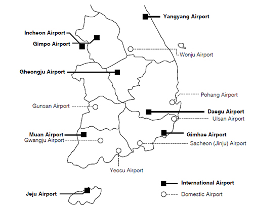
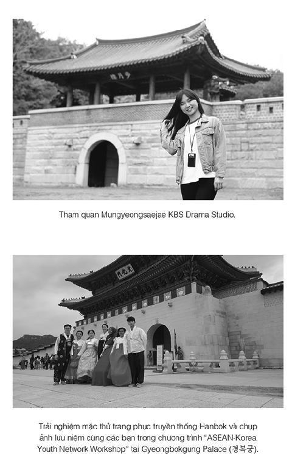
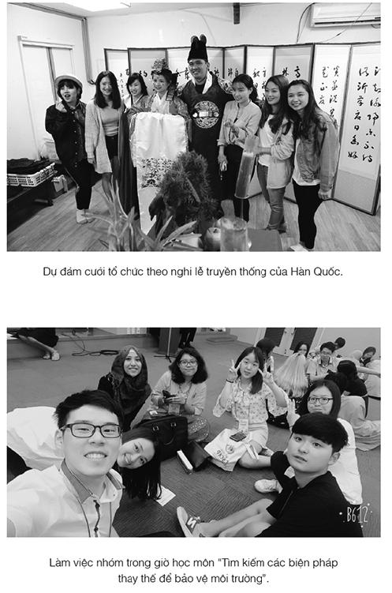

KẾ HOẠCH 3
Kẻ thù lớn nhất của kế hoạch chính là sự lười biếng.
Nếu bạn có thói quen này, thì câu nói quen thuộc sẽ là: “Để mai làm, để mai làm.”
Hãy xây dựng một kế hoạch đơn giản, dễ thực hiện!
Nếu ngay lần đầu tiên bạn đã xây dựng một kế hoạch phức tạp, bạn sẽ rất dễ chần chừ khi phải thực hiện nó.
Chỉ cần bạn không ngừng cố gắng thực hiện kế hoạch,
chắc chắn sẽ đi tới thành công.


Trận quyết đấu giữa Bong Hee và bản kế hoạch
Bong Hee ngồi buồn rầu trên ghế, lật giở từng trang bản kế hoạch mà mình đã xây dựng. Kế hoạch nhằng nhịt cũng giống như tâm trạng rối bời của cô bé, chẳng vui vẻ tí nào.
Khò... khò...
Trong màn đêm yên tĩnh, tiếng ngáy trong phòng của Bong Hee nghe càng rõ hơn. Bố vừa mới từ tiệm bánh về, nhẹ nhàng mở cửa bước vào.
Bong Hee và Bong Goo đều đang ngủ rất say, ngay cả tiếng mở cửa của bố, hai đứa cũng không nghe thấy.
Bố bật đèn. Trên tường cạnh bàn học của Bong Hee dán một bản kế hoạch hình tròn, cô bé đánh dấu những ô khác nhau trên bản kế hoạch bằng bút nhớ dòng.
Sáng 5 giờ 50 thức dậy. Sau đó đánh răng, rửa mặt, ăn sáng, đi học. Sau khi đến trường thì vào phòng làm việc của đài phát thanh. Chương trình phát thanh buổi sáng của trường kết thúc thì bắt đầu vào học. Buổi chiều, sau khi kết thúc các hoạt động ở đài phát thanh thì đến lớp học thêm tiếng Anh và lớp học thêm toán. Các lớp học kết thúc, về đến nhà lúc 8 giờ tối. Buổi tối ăn cơm, rửa bát, dọn dẹp nhà cửa, thời gian tối đa trong khoảng một tiếng rưỡi. Sau đó từ 9 giờ 30, bắt đầu tập viết, làm bài tập ngữ văn, tiếng Anh, toán và viết bản tin phát thanh. 12 giờ mới đi ngủ.
Đọc bản kế hoạch của Bong Hee, bố vô cùng kinh ngạc, bởi lối sinh hoạt trong bản kế hoạch này khác hẳn với cuộc sống hiện nay của cô bé.
Trước tới giờ, sau khi đi học về, việc đầu tiên Bong Hee làm là mở máy tính để chơi điện tử. Chơi chán rồi, nếu không ra phòng khách bật ti vi thì cô bé cũng đi đi lại lại trong phòng để giết thời gian.
Nhưng bản kế hoạch này quả thật khiến ai nấy đều phải giật mình. Trong đó không hề có thời gian dành cho việc chơi điện tử và xem ti vi, ngay cả thời gian nghỉ ngơi thôi cũng không có.
Bố quay sang nhìn Bong Hee, rồi lại nhìn bản kế hoạch của cô bé. Khuôn mặt lộ vẻ hoài nghi, không hiểu rốt cuộc đây là bản kế hoạch do Bong Hee tự xây dựng hay là do mẹ lập ra cho cô bé thực hiện, hay là bài tập ở trường nhỉ?
“Rốt cuộc hôm nay đã có chuyện gì xảy ra với cô con gái ‘bình chân như vại’ vốn chẳng bao giờ biết lo thế này?”
Sau khi đắp chăn cho hai chị em, bố bước ra khỏi phòng. Bố có cảm giác vừa mong chờ, vừa lo lắng cho những việc sẽ diễn ra vào ngày mai.
“Dậy đi! Dậy đi!”
“Kính coong! Kính coong!”
“Chào các bạn! Bây giờ là bản tin sáng.”
5 giờ 50 phút sáng của ngày hôm sau, nhà Bong Hee vang lên đồng loạt rất nhiều tiếng chuông hẹn giờ, nào ở ti vi, nào ở đồng hồ, rồi cả điện thoại.

Bố mệt mỏi bước ra từ phòng ngủ. Bố vào phòng khách, cầm điều khiển ti vi để cho nhỏ tiếng lại.
Một lúc sau, Bong Hee từ từ đi ra, mắt nhắm mắt mở bước vào phòng khách.
Bong Hee ngồi trên ghế sofa, tay khua khua cố tắt chuông hẹn giờ đồng hồ rồi lăn ra ghế. Mấy giây sau, cô bé lại chìm vào giấc ngủ.
Nhìn Bong Hee nằm ngủ trên ghế, bố thương lắm.
“Bong Hee, Bong Hee à, dậy ăn sáng đi, ăn sáng xong chẳng phải con còn phải đến đài phát thanh sao?” Bố khẽ vỗ vai Bong Hee nói.
Vừa nghe thấy ba từ “đài phát thanh”, Bong Hee bỗng đứng bật dậy. Bình thường, dù có xảy ra chuyện động trời cũng không thể làm cô bé tỉnh giấc được, thế mà lần này nhanh như cắt, cô bé đã bật ngay dậy, chẳng khác nào một con lật đật.
“Đài phát thanh, cô giáo siêu-siêu nghiêm khắc, đài phát thanh...” Bong Hee lẩm bẩm.
Bố vỗ vai Bong Hee nói to: “Đúng vậy, mau đến đài phát thanh cho sớm! Bong Hee của chúng ta là người dẫn chương trình mà.”
Lúc này Bong Hee mới mở to mắt nhìn bố, rồi cô bé chạy ngay vào phòng tắm.
Cuộc sống mới của Bong Hee đã bắt đầu như thế đấy. Cô bé lấy bản kế hoạch cho vào trong cặp. “Bạn thắng hay tôi thắng!” Bong Hee cắn chặt răng, đầy quyết tâm.
Ít nhất thì hôm nay Bong Hee cũng đã làm đúng theo kế hoạch. Hơn 11 giờ, khi mệt rã rời, cô bé nằm vật trên ghế sofa.
“Mình lớn thế này rồi nhưng có lẽ đây là lần đầu tiên bận rộn đến vậy. Mới có một ngày mà mình cảm thấy dài như một tháng.” Bong Hee lẩm bẩm một mình.
Bố đang đọc báo, thấy Bong Hee như vậy thì mỉm cười nói: “Con gái này, con bắt đầu cuộc sống mới làm bố cũng phải cố gắng để theo kịp đấy. Bố thấy con không xem ti vi, không chơi điện tử cũng đã là rất ‘siêu’ rồi.”
“Bố à, mấy hôm nay khách đến tiệm bánh cũng đông hơn trước, bố có bí quyết gì đặc biệt vậy?”
“Thực ra cũng không có bí quyết gì, chỉ là nhờ làm theo kế hoạch thôi. Thì ra, sức mạnh của kế hoạch lại làm cho bánh ngon hơn.”
“Kế hoạch?” Bong Hee ngạc nhiên nhìn bố.
“Mẹ làm theo kế hoạch, tuân thủ đúng thời gian hấp bánh. Mẹ căn cứ vào số lượng khách mà đặt kế hoạch về thời gian hấp bánh, có một số khách hàng chỉ đợi khi bánh vừa ra lò là đến mua ngay, bởi vì bánh mới hấp xong thì rất thơm, mềm và ngon nữa.”
“Ồ, hóa ra là như vậy, quả nhiên là sức mạnh của kế hoạch. Con cũng sẽ cố gắng thực hiện kế hoạch, tranh thủ thời gian ngắn để sớm trở thành người dẫn chương trình xuất sắc nhất của trường. Chờ chút, hôm nay còn việc gì mà con chưa làm nhỉ? A, đúng rồi! Phải hoàn thành năm trang bài tập trong sách!” Bong Hee đứng dậy, ngồi vào bàn học với đôi mắt lim dim buồn ngủ. Đã gần 12 giờ đêm.
Còn chưa làm xong bài tập của trang thứ nhất thì mí mắt Bong Hee đã díu cả lại rồi. Dù cô bé có lắc đầu thế nào để cố tỉnh táo thì cũng không sao thắng được ma lực của thần ngủ.
Gật đầu, gật đầu, sầm!
Khi trán của Bong Hee chạm vào mặt bàn cũng là lúc cô bé chìm vào giấc ngủ.
“Ôi, đã ba ngày rồi Bong Hee chưa đến muộn hôm nào! Thật là một kỳ tích!” Khi Bong Hee bước vào đài phát thanh, Ni Na vỗ tay hét lên.
“Bản thân tớ cũng thấy lạ nữa là.” Bong Hee bước đến trước dãy ghế thứ nhất, ngồi xuống đáp lời bạn.
“Các cậu nhìn hai vệt tròn quanh mắt Bong Hee mà xem, cậu ấy giống y một con gấu mèo, một con gấu mèo! Hơn nữa còn là con gấu mèo xấu xí.”
Bong Hee soi gương, dưới hai mắt của cô bé đúng là đã xuất hiện hai quầng thâm giống đám mây màu đen.
“Trật tự nào! Trước khi cô giáo đến chúng ta phải hoàn thành công tác chuẩn bị cho chương trình phát thanh sáng nay đấy.” Anh Kim Hee Jae học lớp sáu, anh nhìn đội của Bong Hee nghiêm nghị nói. Anh vừa là trưởng nhóm kiêm đạo diễn của đài phát thanh. Lúc này Bong Hee mới để ý rằng các anh chị lớp sáu đang bận rộn chuẩn bị cho chương trình phát thanh buổi sáng.
Chị Lee Hye Su đảm nhiệm vị trí dẫn chương trình đang đọc thử bản tin phát thanh, anh quay phim Seo Jin Su đang cắm nối nguồn điện, anh Go Chang Woo phụ trách âm thanh ánh sáng đang kiểm tra âm lượng của micro. Ai nấy đều chăm chú vào công việc của mình, rất thành thục, rất xuất sắc.

Nhưng đội học sinh lớp năm do Bong Hee là đội trưởng lại không biết nên làm gì, mấy đứa cứ đứng ngây ra nhìn các anh chị lớp sáu bận tới bận lui.
Chỉ còn năm phút nữa là đến giờ phát thanh buổi sáng, đúng lúc đó, cô giáo siêu-siêu nghiêm khắc bước vào.
“Các em chuẩn bị xong chưa?”
“Xong rồi ạ.”
“Được rồi, bắt đầu thôi.”
Anh trưởng nhóm vẫy tay ra tín hiệu đồng thời nói nhỏ: “Chuẩn bị... Bắt đầu!”
Chương trình phát thanh buổi sáng được bắt đầu trong tiếng nhạc nhẹ nhàng, chị Hye Su đọc diễn cảm bản tin trong phòng thu: “Đây là chương trình phát thanh buổi sáng của đài phát thanh NBS. Mùa xuân là khoảng thời gian tươi đẹp, là mùa mang đậm ý thơ, mùa xuân là sự bắt đầu cho sức sống tràn đầy.”
Dưới ánh đèn phòng thu, chị Hye Su trông càng xinh đẹp và cuốn hút hơn so với ngày thường. Bây giờ tất cả mọi tiêu điểm đều tập trung vào chị.
“Ôi, chị ấy thật giỏi, thật xinh đẹp!” Ni Na và Na Na nhìn chị Hye Su với ánh mắt ngưỡng mộ và không ngừng tán dương.
Anh trưởng nhóm và các thành viên trong đài đã có thỏa thuận ngầm, mọi người đều làm theo tín hiệu bằng tay của anh, nhanh chóng hoàn thành công việc của mình.
Bong Hee bỗng thấy xúc động, dường như có cái gì rất nóng từ sâu trong trái tim đang khích lệ, cổ vũ cô bé. Từ trước đến nay Bong Hee chưa từng có cảm giác như thế.
Cô giáo siêu-siêu nghiêm khắc quay người lại, nhìn các bạn học sinh lớp năm nói: “Các em hãy chú ý quan sát để học hỏi, đến năm sau đây sẽ là công việc của các em đấy.”
Bỗng ánh mắt Bong Hee bắt gặp ánh mắt cô giáo, hai cô trò nhìn nhau mấy giây, nhưng Bong Hee tỏ ra thiếu tự tin, cô bé vội cúi đầu xuống.
“Bong Hee này, Bong Hee!”
Bong Hee khó khăn lắm mới mở được cặp mắt dễ chừng nặng tới ngàn cân của mình ra, khi đó cô bé mới có cảm giác một cái bóng mơ hồ đang chuyển động trước mặt mình.
“Ngủ gật trong lớp lại còn chảy nhiều nước miếng thế này, em thật chẳng ra sao.” Cô chủ nhiệm vừa nói xong, các bạn trong lớp liền phá lên cười.
“Học được nửa buổi rồi mà em vẫn còn ngủ gật sao? Tiết học buổi sáng, em chẳng khác một con gà bị ốm là mấy, cứ gật gà gật gù, giờ còn bò ra bàn mà ngủ được kia à?”
Bong Hee cố gắng để tinh thần tỉnh táo trở lại, nhưng vô ích, cứ như thể cô bé vừa bị ai đó đánh cho một trận nhừ tử vậy.
“Tối qua em làm gì? Vào lớp cũng không lấy sách ra, em lại cất trong tủ để đồ rồi hả?”
“Dạ, không ạ. Hôm nay em có mang sách.” Nói rồi Bong Hee lấy quyển sách toán ra.
“Bây giờ là giờ ngữ văn!” Cô giáo không biết làm sao đành phải lắc đầu, rồi bước lên bục giảng. Cả lớp lại được một trận cười vỡ bụng.
Bỗng cô bịt mũi lại rồi kêu lên: “Lớp trưởng, mau mở cửa sổ rộng ra! Ăn cơm trưa xong phải mở cửa cho thoáng, em đã biết chưa?”
Lớp trưởng Kang Cheol Kyu liền đứng dậy nói: “Thưa cô, tất cả đều tại bạn Bong Hee. Bạn ấy ngủ cả buổi sáng, trưa muộn mới dậy ăn cơm, khiến cô đưa cơm không có thời gian lau chùi xe chở cơm, còn làm cô lao công không có thời gian nghỉ ngơi, sau đó cũng không kịp thời gian để làm thoáng không khí.”
Cô chủ nhiệm tức giận nhìn Bong Hee, ánh mắt của cô giống như đang nhìn một học sinh hư vô phương dạy dỗ vậy.
“Cô đang nghĩ không biết tại sao mấy ngày nay em không đến muộn, hóa ra trên lớp em toàn... Bong Hee, những điều cô nhắc nhở, em phải để ý chứ.”
“Em sai rồi cô ơi.”
“Được rồi, được rồi. Bắt đầu từ hôm nay, buổi tối em phải đi ngủ sớm. Lên lớp phải chú ý nghe giảng, không được ngủ như hôm nay nữa, em nghe rõ chưa?”
“Vâng, em biết rồi ạ.” Bong Hee giọng mệt mỏi trả lời.
Chiều, sau khi kết thúc buổi họp ở đài phát thanh, Bong Hee tới ngồi trên chiếc ghế phía sau xích đu, giở bản kế hoạch mà mình xây dựng ra. Bản kế hoạch nhàu nhĩ giống như tâm trạng rối bời của Bong Hee, chẳng vui vẻ tí nào.
“Cái gì thế?” Ni Na và Na Na đứng sau lưng Bong Hee hỏi.
“Ồ, hóa ra là bản kế hoạch sinh hoạt, một ngày cậu phải làm nhiều việc thật!” “5 giờ 50 phút sáng ngủ dậy, 12 giờ tối đi ngủ? Cậu làm đúng theo kế hoạch này sao? Hèn chi đến lớp toàn ngủ gật!” Ni Na và Na Na nhìn bản kế hoạch của Bong Hee kêu lên kinh ngạc.
“Tớ làm theo được ba ngày thì đã cảm thấy như đang đứng bên bờ địa ngục. Bây giờ tớ chẳng muốn ăn mà chỉ thèm ngủ thôi. Trên lớp cũng không có tinh thần nghe cô giảng bài, rồi ngay đến bài tập trước đây chỉ cần ba mươi phút là làm xong thì giờ phải mất hai tiếng...” Bong Hee bắt đầu ngáp ngắn ngáp dài.
“Nhưng, cậu thật là giỏi! Đây đúng là một bản kế hoạch vĩ đại. Tớ thấy rằng chỉ cần cậu kiên trì thực hiện theo bản kế hoạch này, thành tích học tập của cậu sẽ không chỉ đứng đầu khối, mà còn có thể trở thành học sinh tiêu biểu, rồi trở thành trưởng nhóm của đài phát thanh nữa!” Ni Na nói.

Na Na lại ra chiều phản đối: “Nhưng trước tiên cần phải tuân thủ nghiêm ngặt kế hoạch, nếu cậu không làm được thì chẳng có ý nghĩa gì cả.”
“Bong Hee chẳng nói là phải kiên trì sao? Hơn nữa, cậu ấy đã kiên trì được ba ngày rồi đấy!”
“Mới ba ngày? Cả ngày hôm nay cậu ấy trông như con gà bị bệnh, cứ gật gù liên tục, đấy mà gọi là tuân thủ kế hoạch à?”
“Cũng đúng, nhưng thế là tốt lắm rồi!”
“Em thấy cậu ấy sẽ sớm bỏ cuộc thôi. Hay chúng mình đánh cược đi?”
Ni Na và Na Na mỗi đứa nói một câu, kết quả là cuộc trò chuyện biến thành một vụ cãi lộn.
Bỗng nhiên Bong Hee hét toáng lên: “Các cậu trật tự cho tớ!”
Sau đó cô bé cầm cặp sách, đứng dậy và đi mất.
“Dù thế nào, bản kế hoạch này cũng chưa tốt lắm. Nếu mình cứ nhất quyết làm theo, bỏ cuộc chỉ là việc sớm muộn thôi, bởi trong đó không có thời gian dành cho nghỉ ngơi.” Bong Hee thở dài nhìn bản kế hoạch, cô bé rất muốn xé tan nó ra, nhưng trên đó bỗng như hiện lên gương mặt lo lắng của mẹ.
Bong Hee nhìn ra ngoài cửa sổ suy nghĩ một hồi, sau đó cầm bút và bắt tay lập một bản kế hoạch mới.
“Đúng vậy, mình nên cho thêm một khoảng thời gian nghỉ ngơi hợp lý, nếu không bản kế hoạch này thật sự rất mệt mỏi. Vậy thì, rút ngắn thời gian học lại một chút, để chơi trò chơi. Mình thấy không xem ti vi cũng không được, như vậy sẽ không hòa nhập với các bạn. Nếu không có tiếng nói chung với mọi người, mình sẽ nhanh chóng bị đào thải. Đúng, mình phải xem ti vi, nhưng sẽ chỉ xem một chút thôi.”
Bản kế hoạch bỗng trở nên nhằng nhịt, không còn chỗ nào để viết nữa.
“Chị ơi, em có vũ khí rồi...” Bong Goo vừa mở cửa đã hét lên vui sướng.
“Vũ khí?”
“Áo giáp sắt và giày bay. Những thứ này chỉ dành cho người của hội viên thôi. Ha ha, em bây giờ là thiên hạ vô địch rồi!”
Bong Hee tò mò bước nhanh đến trước máy tính, mấy thứ đó cô bé vốn cũng thích từ lâu rồi. Trên máy tính, hình ảnh Bong Goo mặc áo giáp sắt, đang hùng dũng tiến về phía ma nữ.
“Bong Goo, không phải vung đao như thế, phải vung thế này cơ.” Bong Hee đứng bên cạnh em trai, tay gõ vào bàn phím. Mới có ba ngày không chơi điện tử mà cô bé cảm thấy như đã không chơi từ lâu lắm rồi.
“Em lùi ra, để chị chơi cho, chị chơi một lúc thôi.” Bong Hee vừa nói vừa giành chỗ ngồi của Bong Goo. Tuy Bong Hee hạ quyết tâm chỉ chơi mấy phút thôi, nhưng thời gian trôi qua thật nhanh.
Mười phút, ba mươi phút, một tiếng... Bong Hee bị trò chơi mê hoặc, không chịu rời máy tính.
Reng... reng!
Tiếng chuông điện thoại reo vang.
Bong Goo nhấc điện thoại lên: “Mẹ phải không ạ?”
Vừa nghe thấy thế, Bong Hee liền vội nhìn đồng hồ, đã 7 giờ rồi.
“Thôi chết! Hôm nay mình phải đi học thêm môn toán.” Bong Hee chợt thấy lo lắng, bởi vì giờ vào lớp đã trôi qua mất rồi.
“Chị con đâu?”
Bong Goo liếc mắt nhìn chị. Bong Hee dùng tay ra hiệu là mình đã đi rồi. Bong Goo thấy thế liền nói với mẹ: “Chị bảo con nói với mẹ là chị đã đi rồi ạ.”
“Ôi trời!” Bong Hee mặt biến sắc. Cô bé muốn đánh cho Bong Goo một cái, nhưng cố nén cục tức vào trong lòng.
Bong Goo gác điện thoại, cúi đầu ngồi xuống sofa.
“Mẹ nói gì?” Bong Hee hỏi.
“Mẹ không nói gì cả, chỉ thở dài một cái. Có lẽ mẹ bị bệnh nặng thật rồi, đều là tại chị hết ấy!” Nói xong, Bong Goo bắt đầu khóc lóc.
Bong Hee ủ rũ đi về phòng.

Sự khác biệt giữa người lớn và trẻ con
Mình không biết bắt đầu từ đâu, hơn nữa chỉ muốn chơi thôi. Đã không tuân thủ được kế hoạch, thì xây dựng kế hoạch có tác dụng gì?
“Tại sao em lại đến muộn?” Bong Hee vừa bước vào phòng làm việc của đài phát thanh thì đã nghe thấy tiếng cô giáo siêu-siêu nghiêm khắc vang lên. Các bạn trong nhóm đều quay lại nhìn Bong Hee, các anh chị lớp sáu cũng nhìn cô bé với ánh mắt khó chịu.
Bong Hee xấu hổ cúi gằm mặt, bởi vì sáng nay cô bé ngủ dậy muộn. Tuy tối hôm trước đã hẹn giờ ở ti vi, đồng hồ báo thức, lẫn cả điện thoại nhưng những âm thanh này cũng không thể làm cô bé tỉnh giấc.
“Lẽ nào em không biết điều quan trọng nhất của phát thanh là thời gian sao?”
“Em biết ạ.”
“Sau giờ học buổi sáng, em phải quét dọn phòng làm việc đài phát thanh, nếu em còn đến muộn lần nữa, thì hãy ở nhà luôn đi.”
Chị Hye Su vẫn như mọi ngày đang đọc bản tin bằng chất giọng truyền cảm.
Khịt, khịt.” Ni Na bỗng ngửi thấy mùi gì đó. Mọi người liền vừa ngửi, vừa tìm kiếm nơi bốc ra mùi.
“Mùi gì thế? Tại sao lại có mùi hôi chân nhỉ?” Na Na bỗng hét lên.
“A, Bong Hee, là cậu!” Bất giác Ni Na chỉ tay về phía Bong Hee, Bong Hee nhìn bạn vẻ “Tớ thì làm sao?” Ánh mắt của mọi người lại một lần nữa đổ dồn về phía cô bé.
Ni Na nói nhỏ vào tai Bong Hee: “Cậu gội đầu chưa? Đã mấy ngày rồi cậu chưa gội đầu vậy?”
“Có lẽ là một tuần rồi.”
“Ôi, giày của cậu đã giặt chưa?”
“Cũng chưa giặt, có lẽ là một tháng thì phải. Mà hình như mấy ngày rồi tớ chưa thay đồ lót.”
Ni Na sững người không tin nổi, nói với Na Na: “Á, Na Na, chị sắp ngất rồi, em mau đến đỡ chị đi.”
“Em cũng thấy đau đầu quá. Em không thể tin mình lại có một cô bạn lôi thôi và nhếch nhác đến như vậy.”
Bong Hee cúi gằm mặt xuống như muốn khóc. Các bạn đứng bên cạnh cũng lần lượt tránh ra xa.
“Mới sáng sớm tớ đã phải đến trường, làm gì có thời gian gội đầu? Sau khi tan học, tớ phải đến lớp học thêm, về đến nhà còn phải làm bài tập...”
“Không phải cậu ấy làm theo kế hoạch à? Vậy tại sao ngay cả thời gian tắm rửa, gội đầu cũng không có?”
“Hừm, nói nhỏ thôi!”
Cô giáo siêu-siêu nghiêm khắc quay người lại nhìn Ni Na và Na Na.
Khi chương trình phát thanh buổi sáng kết thúc, Bong Hee cùng các bạn ở lại dọn dẹp phòng làm việc của đài phát thanh.
“Tại sao lại chọn em ấy?” Tiếng của chị Hye Su từ trong phòng thu vọng ra. “Đầu tóc thì rối bù, giờ này mà còn mặc cả áo gió mùa đông nữa, cái áo đó mới bẩn làm sao. Tớ luôn cảm thấy em ấy có gì không bình thường.”
Chị Hye Su nheo mày nói với anh Hee Jae. Cả hai không hề biết rằng cuộc nói chuyện của họ đã truyền ra ngoài phòng phát thanh.
“Chắc là lần đầu, em ấy không có kinh nghiệm. Lần đầu tiên có ai làm tốt ngay đâu.” Anh Hee Jae an ủi chị Hye Su.
“Em ấy không những học kém, mà còn lười biếng, lười đến mức không rửa mặt mà cũng đến trường, hơn nữa còn nổi tiếng là vua đến muộn, cậu không sợ em ấy làm ảnh hưởng đến hình tượng người dẫn chương trình của đài chúng ta sao?”
“Cô giáo sẽ có cách.”
Lúc đó, Bong Hee đang cầm chổi quét dọn phòng ngoài. Nghe thấy cuộc nói chuyện của anh Hee Jae và chị Hye Su, cô bé bỗng cảm thấy vô cùng căng thẳng, bởi vì cô bé lo rằng vua đến muộn mà họ nói tới chính là mình.
“Tớ không muốn làm việc chung với kiểu người như vậy đâu. Cậu không biết học sinh lớp sáu tụi mình đều không thích em ấy ư.” Đó là giọng của chị Hye Su.
“Không thể, không thể, chẳng lẽ...” Bong Hee bắt đầu hoài nghi không biết mình có đang nghe lầm hay không.
“Cái em Bong Hee ấy đúng là đáng ghét! Tớ thấy kỳ lạ lắm, tại sao cô giáo lại chọn em ấy? Nếu vẫn tiếp tục không có nguyên tắc thế này, tớ nhất định sẽ nói cô giáo đuổi em ấy về nhà.”
Bong Hee như bị dội gáo nước lạnh vào người, cô bé thật chỉ muốn tìm một kẽ nẻ nào đó để chui xuống.

Chị Hye Su mở cửa phòng bước ra, chị chau mày, đi ngang qua nhóm học sinh lớp năm vẻ khó chịu.
Bong Hee không dám ở lại phòng làm việc nữa, cô bé bỏ chạy ra ngoài.
“Có lẽ đúng là mình làm không tốt rồi.” Bong Hee ngồi trong lớp, gục mặt lên bàn, miệng lẩm bẩm. “Kẻ lười nhác, vua đến muộn mà còn muốn làm người dẫn chương trình? Mình đúng là đồ mơ mộng viển vông!”
Tiếng của Bong Hee “bình chân như vại” biến dần thành những tiếng nức nở. Ni Na và Na Na đến bên cạnh từ lúc nào.
“Sao chị Hye Su lại không chú ý đến cảm giác của người khác nhỉ? Chị ấy thật xấu xa.” “Đúng vậy. Học giỏi thì sao chứ, ngày nào chị ấy cũng áp bức người khác.” Để an ủi Bong Hee, Ni Na và Na Na bắt đầu nói xấu chị Hye Su.
“Bong Hee, tớ nghĩ cậu nên xây dựng một kế hoạch khác, hay là để mẹ cậu giúp cậu đi.”
“Xây dựng kế hoạch mới có tác dụng gì? Giờ những việc tớ cần làm đã chất cao thành núi rồi, mà còn chưa biết bắt đầu từ đâu, nhưng tớ lúc nào cũng chỉ muốn chơi thôi. Dù sao cũng không tuân thủ được kế hoạch, thì xây dựng cái mới có tác dụng gì chứ? Tớ thấy tớ đúng là loại người xấu xa đó. Nếu tớ có hai cơ thể thì hay biết bao!” Đúng lúc đó cô chủ nhiệm bước vào, Ni Na và Na Na lập tức chạy về chỗ của mình.
Buổi chiều, sau khi cuộc họp ở đài phát thanh kết thúc, Bong Hee phải ở lại vì sáng nay đến muộn nên đã bị cô giáo phạt quét dọn phòng.
“Thật kỳ lạ, Bong Hee đi đến đâu cũng phải quét dọn vệ sinh.”
“Số phận của người kém may mắn là như vậy đó, tránh phải dọn nhà vệ sinh, liền chạy đến đài phát thanh thì lại phải quét dọn phòng thu.”
“Cậu còn vui mừng trước tai họa của tớ sao?” Bong Hee chỉ muốn ném ngay cái giẻ lên đầu Ni Na, nhưng đành cố nín nhịn.
Na Na đứng dậy nói với Ni Na: “Bọn mình đi thôi, em cũng mệt lắm rồi.”
Cặp song sinh đi khỏi, chỉ còn lại Bong Hee một mình ngồi dọn dẹp đống dây điện micro và còn phải lau sạch bụi ở cửa sổ.
Ở góc phòng thu có một cái tủ khá cũ kỹ. Bong Hee mở cửa tủ ra xem, bên trong có một cuộn dây điện và bộ loa đã hỏng, còn cả mấy cuộn băng cũ vứt lộn xộn trong đó.
Bong Hee muốn đóng cửa tủ lại nhưng không sao đóng được. Cô bé dùng hết sức đẩy cánh cửa khiến cái tủ lung lay, rất nhiều bụi rơi xuống. Rồi từ trên nóc bỗng rơi xuống một vật gì đó.
Thì ra là một quyển nhật ký cũ kỹ, nhàu nát.
Bong Hee cẩn thận nhìn cuốn sổ một lúc. Bên ngoài bìa có ghi “Cẩm nang phép thuật thực hiện kế hoạch” và “Kim Ki Ho số 45 lớp 5/1”.
“Cẩm nang phép thuật? Trong đài có người tên là Kim Ki Ho không nhỉ?”
Bong Hee tò mò mở cuốn sổ ra, bên trong kẹp tờ phiếu đánh giá tổng hợp kết quả lớp bốn và lớp năm. Bong Hee mở phiếu lớp bốn trước.
“Ngữ văn 25 điểm, toán 20 điểm, đạo đức 15 điểm, khoa học tự nhiên 30 điểm...”

“Xếp thứ 50 trên tổng số 52 học sinh! Người này tệ quá, học còn kém hơn cả mình.” Bong Hee cười rồi đọc tiếp.
Em Kim Ki Ho lên lớp không chú ý nghe giảng, thường xuyên quên mang sách vở. Vì thiếu tự tin và tinh thần trách nhiệm nên em ấy luôn chần chừ, lười biếng, nhiều việc còn làm chưa tốt. Ngoài ra, em ấy còn đi học muộn quá số lần cho phép.
“Ôi! Tình trạng của anh ấy còn tồi tệ hơn cả mình!”
Bong Hee nhìn phần ý kiến của phụ huynh chỉ có một dòng chữ ngắn gọn.
Hãy đánh nó!
“Ha ha! Bố mẹ anh ấy còn nghiêm khắc hơn mẹ mình nhiều.”
Sau đó, Bong Hee giở đến phiếu đánh giá tổng hợp của lớp năm.
“Ngữ văn 95 điểm, toán 100 điểm, đạo đức 100 điểm, khoa học tự nhiên 95 điểm... xếp thứ nhất?”
Phần lời phê của giáo viên viết:
Em Kim Ki Ho đã cố gắng, nỗ lực và hiện đứng thứ nhất của lớp. Trên lớp em ngồi ngay ngắn, giọng đọc to, rõ ràng. Em luôn chăm chỉ trong học tập cũng như trong công việc của người dẫn chương trình. Chữ viết ngay ngắn, thành tích học tập tốt, mọi người đều yêu quý. Tiếp tục cố gắng nhé, chắc chắn em sẽ trở thành một học sinh xuất sắc!
“Lời nhận xét này là dành cho người khác thì phải? Trong một năm làm sao anh ấy có thể thay đổi nhiều như vậy được chứ?”
Bong Hee nhìn lại một lần nữa tên của người được nhận xét, chính xác là Kim Ki Ho, rõ ràng cùng một người. Lẽ nào trên thế giới tồn tại cuốn “Cẩm nang phép thuật” có sức mạnh ghê gớm thế sao?
Bong Hee khẽ nghiêng đầu, cô bé bắt đầu đọc to nội dung trong cuốn “Cẩm nang phép thuật”.
Trang đầu tiên của cuốn sổ viết:
Có một cây đàn vừa cũ vừa bẩn, âm thanh bị lạc điệu, nên chẳng ai muốn mua. Một ông cụ đã cẩn thận điều chỉnh lại âm thanh của từng sợi dây đàn, nhờ vậy cây đàn đã có thể tạo ra những bản nhạc hay, kết quả là giá bán của nó được đẩy lên cao ngất ngưởng.
Một người cũng giống như cây đàn, tâm lý cũng giống như tiếng đàn, cần phải điều chỉnh tâm lý thật tốt, người ta sẽ không dám coi thường giá trị của bạn.
Mong muốn của con người là vô tận, còn cơ hội đến rồi lại đi. Nhiều khi, chúng ta cứ mãi chờ đợi để mong đạt được nhiều hơn, nếu không có những hành động quyết đoán, không những không thể thỏa mãn mong muốn, mà ngược lại có khi còn làm mất đi những thứ bạn đang có.
Kẻ kiên nhẫn sẽ câu được con cá lớn.
Kiên nhẫn là một loại sức mạnh tích cực giữ vai trò chủ đạo trong vận mệnh. Quyết tâm theo đuổi mục tiêu cuộc sống càng kiên định bao nhiêu, bạn càng kiên nhẫn khắc phục khó khăn bấy nhiêu. Kiên trì làm đến cùng thì không có mục tiêu nào là không thể đạt được.
Bong Hee vừa cảm thấy như mình đã hiểu những dòng chữ này nhưng cũng lại chẳng hiểu gì cả, hình như có nghĩa là kiên trì đến cùng mới có thể đạt được thành công.
Cốc, cốc, cốc!
Có tiếng gõ cửa, hóa ra là cô giáo siêu-siêu nghiêm khắc, cô bước vào nhắc nhở: “Em dọn xong rồi thì mau về nhà đi, lần sau đi học sớm một chút.”
Bong Hee nhân lúc cô giáo không chú ý, giấu cuốn cẩm nang phép thuật vào trong cặp, sau đó chạy thật nhanh về nhà. Bong Hee nghĩ, nếu những việc kỳ lạ như thế này cũng xảy với bản thân mình thì hay biết mấy!
KẾ HOẠCH BÍ MẬT 4
Thư mẹ gửi con gái!
PHẦN LỚN THỜI GIAN CON LÀM GÌ?
Bong Hee, con nói rất muốn biết mình đã sắp xếp thời gian hợp lý hay chưa phải không?
Mẹ có một cách rất hay! Để hoàn thành việc kiểm tra sức khỏe một cách thuận tiện và hiệu quả, bệnh viện đã phát cho mỗi người một tờ giấy kiểm tra sức khỏe, đúng không nào? Con cũng có thể tự thiết kế một tờ giấy kiểm tra thời gian giống như phiếu kiểm tra sức khỏe của bệnh viện, cũng chính là bảng quản lý thời gian.
Bảng quản lý thời gian lấy đơn vị tính là một tuần, thời gian của một tuần = 24 tiếng x 7 ngày = 168 tiếng, đây cũng là thời gian để ngủ, đi học, chơi điện tử và cả thời gian chơi cùng bạn bè..., tổng thời gian của những việc này phải là 168 tiếng.
Nhưng con sẽ phát hiện tất cả thời gian cộng lại vẫn ít hơn 168 tiếng,
lẽ nào thời gian tự mất đi mà không có nguyên nhân?
Hãy suy nghĩ xem:
1. Con thường bận làm gì?
2. Việc nào con làm đạt hiệu quả nhất?
3. Con đã lãng phí tổng cộng bao nhiêu thời gian?
Làm thế nào để rút ngắn thời gian lãng phí, tăng thời gian hiệu quả?
Chỉ cần con nghĩ ra biện pháp tốt, cuộc sống của con sẽ trở nên hữu ích hơn.